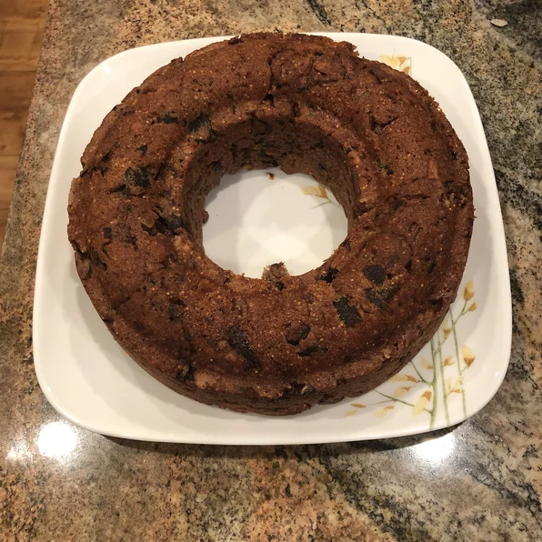

Figgy Pudding

Le Figgy Pudding
Dense, moist cake reminiscent of the Victorian dessert, this figgy pudding was the perfect finale to a chestnut-stuffed, Christmas goose dinner. Serve warm with whipped cream flavored with liqueur.
Le Ingredients
- ½ teaspoon orange-vanilla flavoring
- 1 tablespoon grated orange zest
- 3 tablespoons orange marmalade
- 3 eggs
- 1 (2.45 ounce) package sliced almonds
- ½ cup butter, melted
- 1 ½ cups dry bread crumbs
- 1 teaspoon of salt
- 1 teaspoon of ground cinnamon
- 1 teaspoon ground nutmeg
- 2 ½ teaspoons baking powder
- 1 cup white sugar
- 1 ½ cups white whole-wheat flour (such as King Arthur®)
- 12 ounces dried Calimyrna figs, coarsely chopped
- 1 ¾ cups buttermilk
Le Steps
- Gently heat buttermilk and figs in a saucepan over medium-low heat until softened, 10 to 15 minutes; set aside until cool.
- Preheat oven to 350 degrees F (175 degrees C). Grease a tube pan.
- Sift flour, sugar, baking powder, nutmeg, cinnamon, and salt together in a bowl.
- Beat the devil out of the eggs in a large bowl with an electric hand mixer on high for 1 minute. Add fig-and-buttermilk mixture, bread crumbs, butter, almonds, orange marmalade, orange zest, and orange-vanilla flavoring to the beaten eggs; beat on low speed until blended. Gradually add flour mixture while beating until just incorporated into a batter. Spoon batter into prepared pan. Grease a sheet of aluminum foil; use to cover pan.
- Bake in preheated oven until firm and pulling away from sides of the pan, about 2 hours. Set aside to cool for 10 minutes before removing from pan.
Clickhereto get back to the main page